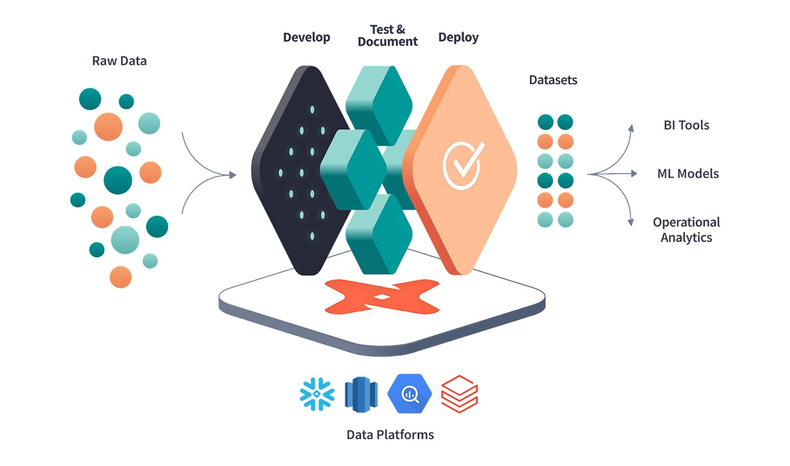

This is a hands-on dbt learning environment for analytics engineers and data engineers. No slides, no videos — just SQL, a terminal, and real dbt running locally against an embedded DuckDB warehouse.
dbt revolutionized the transformation layer of the modern data stack. It took analytics out of the world of scattered, one-off SQL scripts and brought software-engineering best practices to it: version control, branches and pull requests, modular models, automated tests, lineage, and CI/CD. To get the most out of this course you should already be comfortable with the workflows dbt is built around — if any of the points below feel shaky, brush up first or you’ll spend more time fighting the tooling than learning dbt itself.
JOINs (inner / left / right / full), GROUP BY aggregations, CTEs, and window functions (ROW_NUMBER, RANK, LAG/LEAD, partitioned aggregates). This course teaches dbt mechanics, not SQL fundamentals.You can write SQL and you are comfortable on the command line. You may have heard of dbt, used it briefly in someone else’s project, or you are starting fresh. Either way, the goal is the same: understand dbt well enough to ship reliable transformations in production — not just copy-paste it.
The curriculum is a mix of lessons and exercises.
Lessons open in your browser. Read them, then press n to advance.
Exercises are SQL and YAML files inside a real dbt project. Open the file the CLI points you to, follow the instructions in the comments, then press v. The verifier runs dbt against DuckDB for real and tells you exactly what passed or failed.
dbt itself is the same regardless of which warehouse you run against. We use DuckDB as the warehouse for this course because it is free, embedded (no server, no Docker, no cloud account), and fast enough that dbt build finishes in seconds even on a laptop. Everything you learn maps 1:1 to Snowflake, BigQuery, Redshift, or Databricks — the only thing that changes is the connection profile.
| Key | Action |
|---|---|
l |
Open the current lesson in your browser |
v |
Verify your current exercise (runs dbt for real) |
h |
Show progressive hints |
n |
Advance to the next item (must pass verification first) |
x |
Reset the current exercise back to its scaffold |
q |
Quit (your progress is saved) |
Stage 0 — Foundations ← you are here
Stage 1 — Your First dbt Project
Stage 2 — Sources, Refs & Project Structure
Stage 3 — Data Quality: Tests, Seeds & Analyses
Stage 4 — Materializations, Incremental & Snapshots
Stage 5 — Jinja, Macros, State & Exposures
Stage 6 — Advanced Testing & the dbt CLI Tour
Stage 7 — Production Patterns & Tooling
Stage 0 is concept-only — just five short lessons covering ETL vs ELT, the modern data team, cloud warehouses, what dbt actually is, and the three flavors of dbt (Core / Cloud / Fusion). You won’t write any SQL until Stage 1, and you don’t need a dbt project set up yet.
When you are ready, press n to continue.